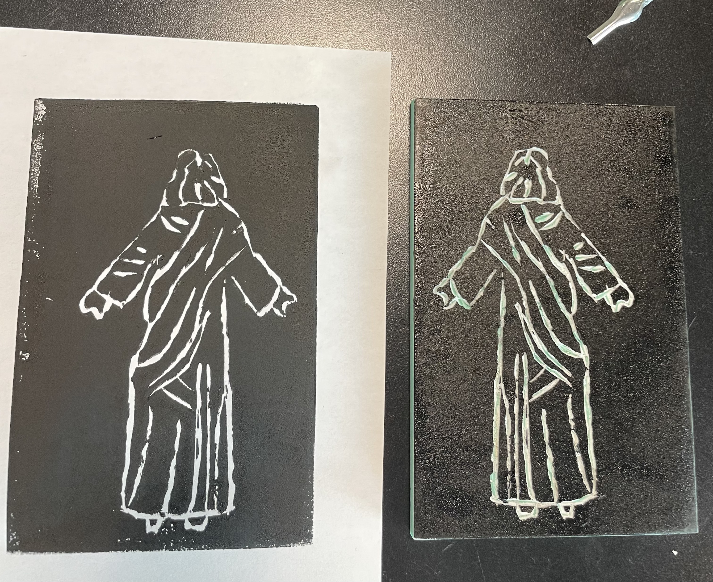

Here is a compilation of visual projects I have made inclduing mainly art and photography

Christ Crucifixion
A digital illustration created using Adobe Illustrator's pen tool, depicting the crucifixion of Christ. This piece was part of my Digital Graphics course project.

Washington Monument
A striking photograph of the Washington Monument, capturing its iconic presence against the Washington D.C. skyline.
Flight
A dynamic aerial photograph capturing the essence of flight and movement in nature.
Palm Trees
A serene landscape featuring palm trees, showcasing natural beauty and tranquility in the Dominican Republic
Data Plot
A data visualization project demonstrating analytical and technical skills in data representation.

Red Sky
A dramatic photograph capturing a stunning red sky, showcasing nature's beautiful color palette.
Tuscany
A picturesque landscape of Tuscany, Italy, capturing the region's famous rolling hills and natural beauty.
Red Sun On The Horizon
Not great quality but an amazing capture of the red sun setting in the horizion in Key West
Rome
A scenic view of Rome
Florence Sunset
Not amazing quality but capture the Suns's light setting from Florence

Tuscany
A stamp of Jesus I carved out of a block and it's result
Times Square
Capture of the lights in New York's Time Square